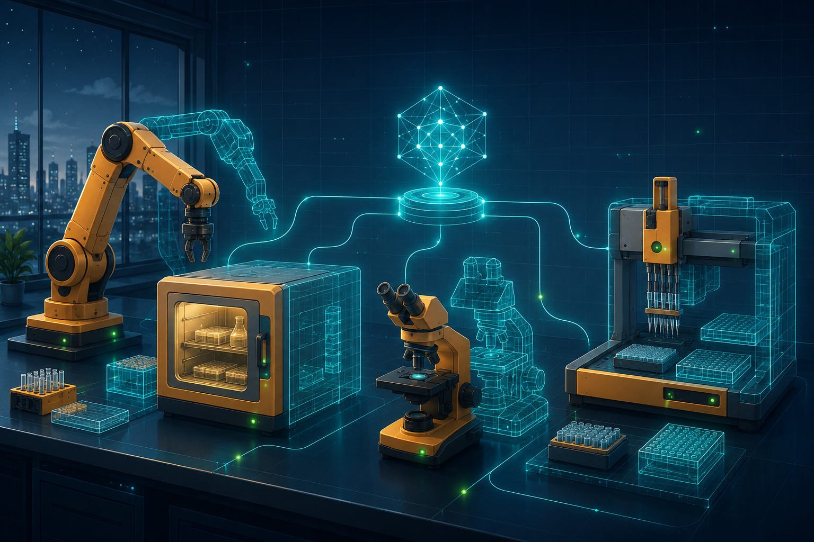

Concept 10 · The Payoff
Stunning Use Cases
When a device becomes a declarative, simulatable, event-emitting resource, you don't get a neater way to toggle a pin. You get a key that fits the lock of whole industries. Here are seven.
I want to be honest with you about why this chapter exists. Everything before it was scaffolding — the resource, the desired-versus-reported twin, the event log, the simulator. Scaffolding is easy to admire and hard to believe in. So let's go find the buildings. Let's walk into a real lab, a real factory, a real greenhouse, and ask the only question that matters: does the idea pay rent? It does, and it pays it in the same three coins everywhere — a uniform resource, a faithful simulator, and a durable event stream.

A sweeping, optimistic editorial illustration in flat vector style: a "self-driving laboratory" at night — robotic arms, an incubator, a microscope, and liquid handlers arranged on a bench, each device haloed by a cool petrol-teal wireframe "digital twin" and connected by thin glowing signal-lines to a central orchestrator. A few live-green status dots. Industrial-amber hardware, petrol-teal twins, on a cool slate background with a faint blueprint grid. Generous whitespace, hopeful and futuristic, no text baked in.
Generate this with your image agent, then drop the file here.
Watch for the recurring thread as we go: the resource model unifies heterogeneous hardware, the twin survives disconnection, the event log gives you a replayable timeline, and the simulator lets you build, test, and train with zero hardware. Same four moves, seven industries.
· 11 · The Self-Driving Laboratory
Picture a life-sciences bench at 2 a.m. with nobody in the room. A liquid handler, a plate reader, an incubator, and a microscope — four vendors, four protocols, four manuals — all sit behind a single SiLA 2 adapter as uniform resources. A grad student doesn't script port writes; she declares an assay as desired state: "hold the plate at 37 °C and 5% CO₂, dispense reagent, then image every 30 minutes for a week." The runtime reconciles that intent across all four instruments, and the twin tracks what each machine reports against what she asked for.
SiLA 2 is a real, self-describing microservice standard for lab automation — each instrument advertises its own features over gRPC. The catch, told plainly: there's no off-the-shelf Elixir SiLA stack today, so the adapter is something you'd build. The payoff is that you only build it once.
It turns fragile, vendor-specific integration into one declarative protocol — and the simulator lets that student dry-run a week-long overnight assay in seconds, catching the off-by-one in her dispense loop before she risks a single irreplaceable sample.
2 · The Lights-Out Factory Work-Cell
A welding cell runs through the night with the floor lights off. A welding robot, a conveyor, and a safety light-curtain — speaking OPC-UA and Modbus — appear as resources. A production job isn't a program; it's desired state the runtime reconciles into cell sequencing: feed part, clamp, weld seam, release, index conveyor.
Every state change emits an event, so traceability and OEE roll up automatically — no bolt-on data historian. And a simulation-first build lets you commission and validate the whole line virtually before a robot is bolted to the floor, collapsing weeks of on-floor commissioning into a test suite.
3 · The Smart Greenhouse
A precision-agriculture greenhouse holds a living thing to a promise. Vents, irrigation valves, grow-lights, and soil-moisture and CO₂ sensors all carry declared setpoints — "keep the canopy at 24 °C and 60% RH." As weather perturbs the room, reconciliation drives the actuators back toward the promise without anyone touching a thing.
The desired/reported split shines when a remote greenhouse's cell link drops: a local Nerves controller keeps enforcing desired state on its own and reconciles cleanly on reconnect — the crop never notices. Meanwhile a simulated weather-and-plant model lets you test control strategies across a virtual growing season overnight.
4 · The Smart Building
An office tower at dusk runs a single sentence: "after 19:00, lock the perimeter doors, drop the lobby to setback temperature, dim the lights to 20%." Doors, HVAC zones, and lighting circuits — wildly different hardware from wildly different vendors — present as uniform resources, so that sentence is just desired state applied across all of them at once. No special-casing the access panel versus the thermostat.
One event stream becomes a single unified security-and-energy timeline. And simulating the entire building lets you rehearse emergencies — fire detected → unlock all egress doors, pressurize the stairwells — over and over, without ever endangering an occupant or cycling real equipment.
5 · The Autonomous Delivery Fleet
A hundred delivery drones are aloft over a city, each one a resource carrying its own desired mission state: this list of waypoints, that geofence, return-to-home on low battery. The runtime reconciles intent against reported telemetry streaming back over MQTT on flaky LTE — and when a link stutters, the twin holds the last known truth instead of panicking.
The event stream powers live fleet dashboards and, later, blow-by-blow incident forensics. Better still, a hardware-in-the-loop / simulation-first rig flies a thousand virtual drones through wind shear, GPS-loss, and battery-fault scenarios in CI — before any real aircraft leaves the ground.
6 · The Automated Warehouse
In a dark fulfillment center, AS/RS storage-and-retrieval cranes and a swarm of autonomous mobile robots are all resources. A customer order becomes desired state — "retrieve bin 4827 to pick station 3" — that reconciles into concrete device commands. Congestion isn't programmed; it emerges from event-driven coordination between machines, the way traffic emerges from cars.
You can simulate the whole fleet against a virtual warehouse map to test throughput, deadlock, and charging cycles — and, when a real jam happens at 4 a.m., replay that day's event log to reproduce the snarl exactly and debug it in daylight.
7 · The Energy Microgrid
A campus runs its own little grid. Solar inverters, battery storage, EV chargers, and smart meters — talking Modbus and OPC-UA — are resources, and desired state expresses dispatch intent: "charge the battery from surplus PV, and cap grid import at 50 kW." The runtime reconciles that intent in real time against measured power flows, nudging each asset as the sun and the load wander.
The event log hands regulators an immutable record of every dispatch decision — who charged what, when, and why. And simulation stress-tests islanding — grid-loss → seamless switch to battery — safely against modeled load and generation, so you trust the transfer before the lights actually flicker.
And the pattern beneath them all
Step back and notice what just happened. We toured a lab, a factory, a farm, a building, a vehicle fleet, a warehouse, and an energy grid. Seven industries that share almost nothing — not their hardware, not their protocols, not their regulators, not even their vocabulary. And yet every single one reduced to the same three abstractions: a resource, a simulator, an event. That is not a coincidence. That is the whole bet.
· 5Same three coins, seven tills
| Domain | Resources | Twin saves you when… | Simulation buys |
|---|---|---|---|
| Self-driving lab | handler, reader, incubator, scope | an assay must hold mid-run | dry-run a week in seconds |
| Factory cell | robot, conveyor, light-curtain | auditing every weld | virtual commissioning |
| Greenhouse | vents, valves, lights, sensors | the cell link drops | a season overnight |
| Smart building | doors, HVAC, lighting | one security timeline | safe fire drills |
| Drone fleet | each drone | LTE goes flaky | 1,000 flights in CI |
| Warehouse | cranes, AMRs | replaying a jam | throughput & deadlock tests |
| Microgrid | inverters, batteries, chargers, meters | regulators ask "why?" | islanding stress-tests |
The columns barely change. resource unifies the heterogeneous hardware; the twin survives disconnection; events give the durable audit-and-replay timeline; the simulator lets you build, test, and train with no hardware in the room. That uniformity — the same shape fitting labs and farms and grids alike — is the future-proofing the framework is reaching for. Build it once for one device; deploy it across an industry you haven't met yet.
The vision is sound; the tooling is uneven. Elixir support for SiLA 2 and OPC-UA varies in maturity — for several of these you'd write or harden the adapter yourself. That's a real cost, not a footnote to wave away. It's also exactly the cost the resource pattern asks you to pay once. Which of these is worth it, and how to decide, is precisely what the next chapter is for.